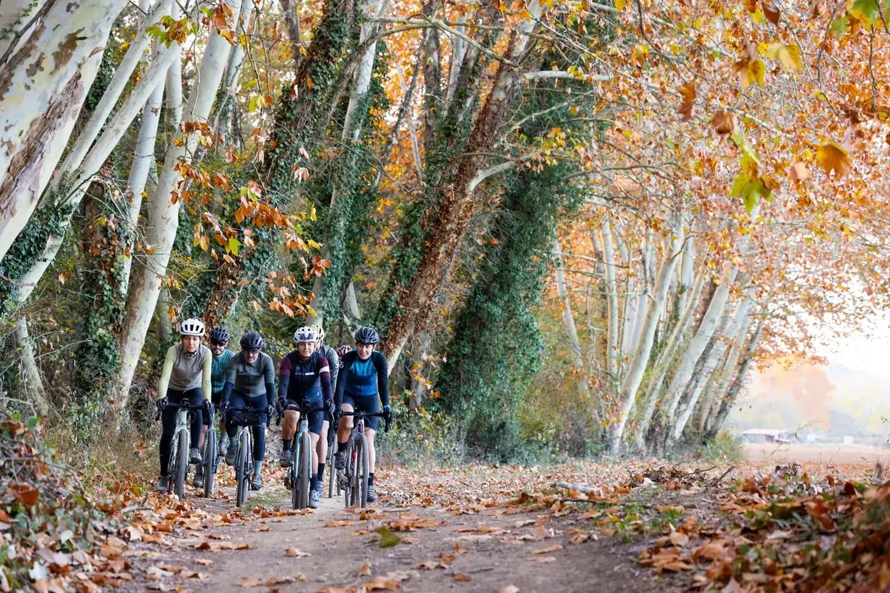
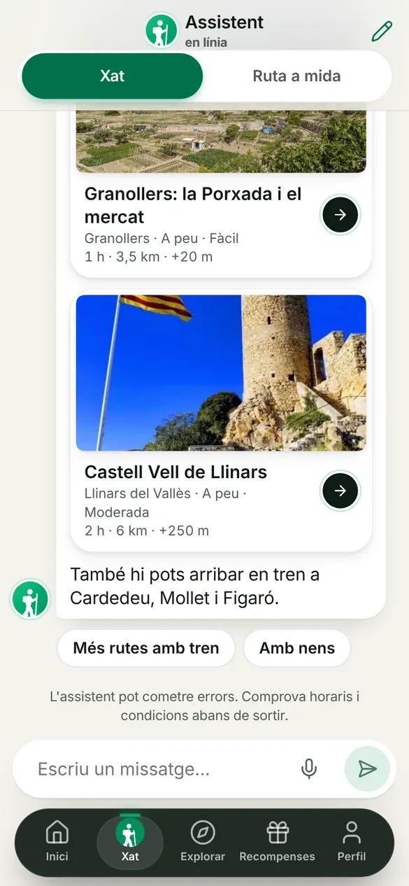
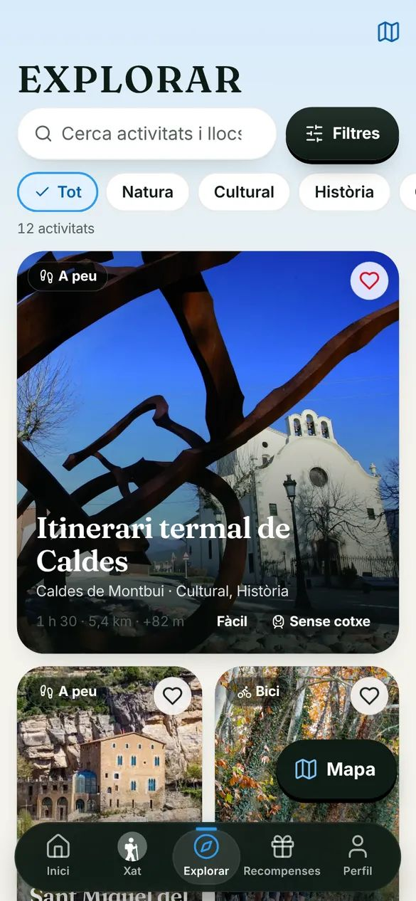
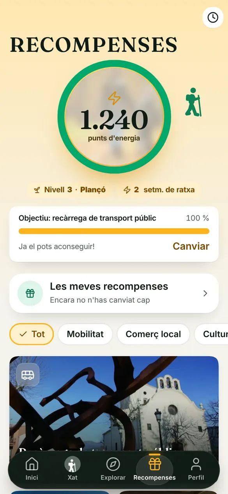
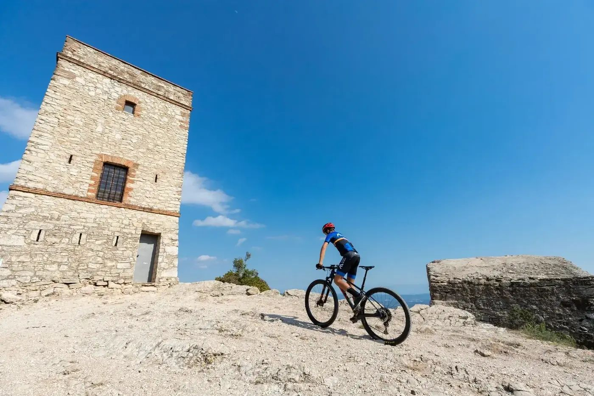

Treball de Recerca
Tutora:
· Curs
Treball de Recerca

El problema
Pregunta de recerca
Metodologia
El territori
Sant Miquel del Fai
El problema
Una sola experiència
Benchmarking
La solució
El prototip

1 · Pregunta

2 · Tria

3 · Suma punts
ufachord94.github.io/VALIA
Prototip visual v amb dades d'exemple. L'assistent encara no és una IA real.
Investigació de camp
n = [PENDENT] · data: [PENDENT] · la faria servir: [PENDENT]
Persones que l'han provat: [PENDENT]
Contactats i interessats: [PENDENT]
Model de negoci
Viabilitat econòmica
Model d'ingressos: [PENDENT]
Import i fonts de finançament: [PENDENT]
Pessimista, realista i optimista: [PENDENT]
Usuaris o ingressos necessaris: [PENDENT]
Màrqueting
Sostenibilitat
CO₂ estalviat i quilòmetres sense cotxe
Llocs i patrimoni visitats
Suport al comerç local
Fórmula i exemple calculat: [PENDENT]
Conclusions
Prova Valia:
ufachord94.github.io/VALIA
Gràcies a la nostra tutora, .
